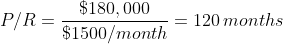
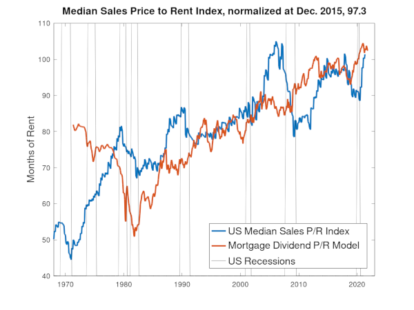

A Housing Bubble or a House of Cards?
Aug. 1, 2021
The price to rent ratio (P/R) is a well known litmus test for real estate deals. However, you can stack the deck in your favor by knowing how current market P/Rs compare to the target P/R of federal policy. For example, if you could rent your $180,000 home for $1500/month, your P/R ratio is 120 months.
One can see below that P/Rs from the past are not equal to today's market from FRED data on median sales price of US homes (MSPUS) and a rent index (CUSR0000SEHC).
The hypothesis of the limiting dividend model is that a lower bound on the price to rent ratio (P/R) is set by combination of fiat money policy in parallel with a real-economy resistance to becoming rundown. The Federal Reserve provides plenty of public data to test it out, and the result is plotted in red, with US recessions shown in blue.
Should I Buy or Rent?
The model provides a lower bound of where fair market property prices are headed based on federal policy. With the real price ratio (black) normalized to the model (red) in 2016, it looks like property prices in Qtr. 1 2021 were quickly recovering but not yet bubbling.
Is the model valid? You can read more about the model in the limiting dividend model. Are the inputs good? I used two more FRED datasets MORTGAGE30US and JHDUSRGDBPBR but also an unsupported value of 180 months for the run down resistance, based only anecdotally on my own home expenses. Try the MATLAB or Octave code yourself with up to date FRED data:
clear;
clc;
function data = import_fred_csv(filename)
% Import FRED CSV Data (should be monthly or greater timescale)
data=csvread(filename);
% Remove Title Row
data(1,:)=[];
% Convert Year/Month Complex Numbers to month index
data(:,1) = real(12*data(:,1))-imag(data(:,1));
endfunction
function array = stretch_align_index(data, start, stop)
m = 0;
while(m <= stop - start)
i = lookup(data(:,1), m+start);
array(m+1) = data(i,2);
m = m + 1;
endwhile
endfunction
mort30us = import_fred_csv('C:\Economic-Data\MORTGAGE30US.csv'); % percent apr
mspus = import_fred_csv('C:\Economic-Data\MSPUS.csv'); % dollars
rent_index = import_fred_csv('C:\Economic-Data\CUUR0000SEHA.csv'); % unitless
recessions = import_fred_csv('C:\Economic-Data\JHDUSRGDPBR.csv'); % 0 or 1
start = max([mspus(1,1),mort30us(1,1),rent_index(1,1), recessions(1,1)]);
stop = min([max(mspus(:,1)), max(mort30us(:,1)), max(rent_index(:,1)), max(recessions(:,1))]);
yr = (start : stop)/12;
apr = stretch_align_index(mort30us,start,stop);
mpr = realpow(1 + apr./100, 1/12);
Rmort = (1-mpr.^(-360)) ./ (1 - 1./mpr);
Vmed = stretch_align_index(mspus,start,stop);
Irent = stretch_align_index(rent_index,start,stop);
Recess = stretch_align_index(recessions, start, stop);
Rreal = 180;
scale_refpoint = lookup(yr,2016);
Rth = (Rreal * Rmort)./(Rmort + Rreal);
scale = Vmed(scale_refpoint)/(Rth(scale_refpoint)*Irent(scale_refpoint));
plot(yr, Vmed./(scale*Irent), 'k', yr, Rth, 'r', yr, 70*Recess+40);
title("Median Sales Price to Rent Ratio");
legend("Median Sales Price P/R Index", "Limiting Dividend Minimum Fair P/R Ratio", "US Recession", "location","southeast");
ylabel("months");